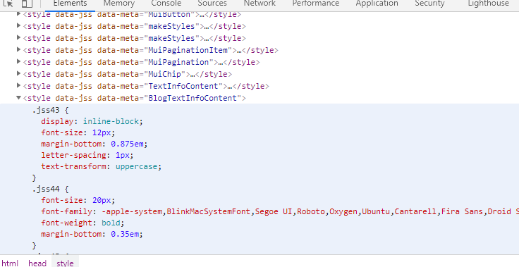
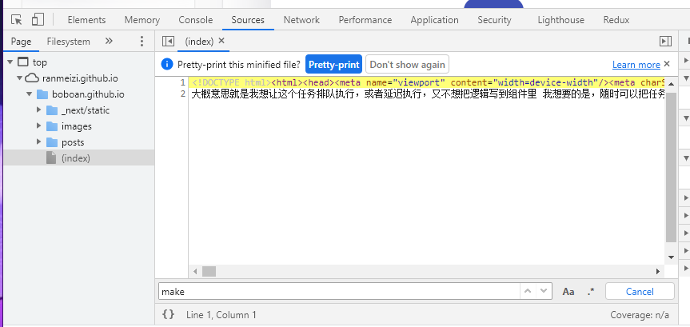
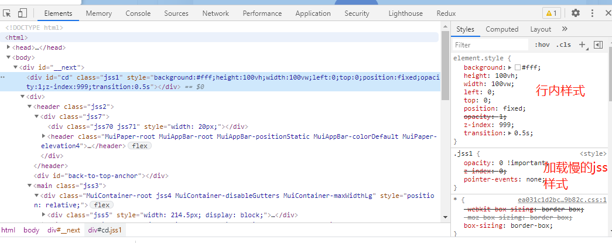

JSS踩坑
我的样式飞了
最近在使用material-ui库的时候接触到了jss，发现jss可能加载比写link标签还要慢 比如我打开了我写jss的html页，可以看到我想要的样式都在data-jss这个style标签里

而首次请求并不存在这个标签
猜测这个style标签很可能时等支撑jss的js加载好了再生成的，那这就太慢了，网速慢一点的话，样式根本来不及再人眼睛反应过来之前请求回来，直接导致我的页面肉眼可见的样式飞了。。 ##这又代表啥呢？？ htlm请求回来有了基本的标签结构，但是标签的样式还没创建好或者还没请求回来，比如我有一个icon是用svg做的，我在jss里写了约束svg的height和width，好嘛，html加载好了，显示出来了，可height和width还没到，这下我的页面被本该很小的svg填满了补救方案
想来想去我想到了遮罩层去遮挡还未请求回css时的页面。（有更好方案或者可以解决这个问题可以留个言~我再补救//） 我想：jss不是请求的慢么，那么我把遮罩div样式写进行内样式，再jss里再写隐藏遮罩div的样式，这样就完美挡住了没样式的页面
